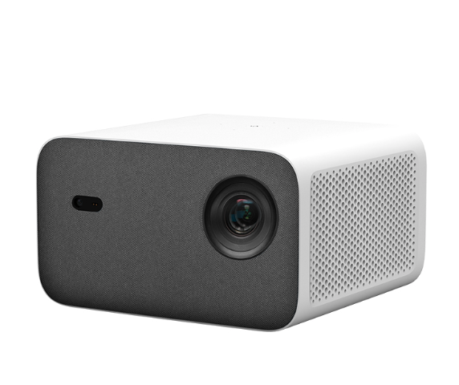

前段时间被一个“500强企业内的前端开发工程师”面试了一轮，舌战了一轮面向对象和函数式。作为后端出身的前端开发，我对面向对象和函数式都有着包容态度，对我来说因为两种派系不同而相互争论、相互职责完全没有必要。
不过，当前前端开发人员对面向对象知识的匮乏让我很是吃惊，就如这次面试，这位500强前端哥们儿真的对面向对象一窍不通还高谈阔论，我很是不解，如果当今前端开发都如斯，天花板还真的很难提高。
估决定，我来亲自梳理前端开发人员不得不知道的面向对象知识以及函数式编程知识。这个应该是一个系列，我会顺序渐进方式带大家了解面向对象思想以及函数式编程思想，二者有如何差别？那么开始吧！
什么是面向对象？
面向对象编程是一种编程范式，以对象而不是函数为中心的编程风格。这不是什么新鲜事，它从70年代就已经存在，但与来来往往的工具和框架不同，面向对象编程时至今日仍然非常重要，那是因为它不是编程语言或工具。这是一种编程风格或一种编程范式。
有几种编程语言支持面向对象的编程，例如 C#、Java、Ruby、Python、JavaScript 等。
面向过程V.S面向对象
面向对象编程之前，我们有过面向过程编程，在面向过程中，我们会把程序分成一组的函数来执行。
所以我们就会有一大堆的存储数据的变量和一大堆对数据进行操作的函数。这种编程风格非常简单直接，通常你在大学中第一个编程科目中都会学到面向过程的编程风格。但是随着你的程序的变大，你会发现，你会写出n多个函数，为了实现相近的功能，可能需要重复写好多代码。如果修改一个函数，可能很多函数也没办法执行下去。这就是你在很多短视频中说到的复制粘贴程序员的意思。这种代码也叫做高耦合，函数和函数之间的依赖关系非常明显，动一发则动全身。所以我们真正需要一种范式规范我们的编程模式，让我们的代码可利于读写，更利于扩展。
封装
在面向对象编程中我们将一组相关的变量和函数组合成一个单元。 我们称该单元为对象。我们将这些变量称为属性，函数称为方法。
比如，我们来想一下一个汽车。
classDiagram
class Car{
trademark
model
color
start()
stop()
move()
}
因此，在面向对象的编程中，您将相关的变量和对它们进行操作的函数分组为对象。
这个我们叫为封装。
首先我们看以下代码：
let baseSalary = 30000
let overtime = 10
let rate = 20
function getWage(baseSalary, overtime, rate) {
return baseSalary + (overtime * rate)
}
我们用面向对象解决这个问题
let employee = {
baseSalary: 30000,
overtime: 10,
rate: 20,
getWage() {
return this.baseSalary + (this.overtime * this.rate)
}
}
employee.getWage()
这两种方案有什么区别？首先我们可以看到getWage函数不需要加入参数了，因为我们已经把getWage函数放到employee对象内部，跟其他变量一起组成了对象。getWage跟这三个属性有了绑定关系， 不需要重新从外面传入参数。
这个就是我们所谓的封装，我们把相互关联的变量和方法重新组合在一起变成一个新的整体：对象。
抽象

咱们想象一下投影仪为一个对象。这个投影仪对象内部应该会有非常复杂的逻辑。但在外面只有几个按钮供我们交互。你只需要按开关机或者播放按钮，你不需要关注机器里面发生的事情。这些所有的复杂逻辑都对你隐藏。这就是抽象的作用。我们可以在对象中用同样的技术。
我们可以隐藏一些函数和方法，让外界不可见。这个给我们几种便利。
-
我们会让对象的接口变得简洁
使用和理解具有少一点你属性和方法的对象比具有多个属性和方法的对象更易。 -
第二个好处是它可以帮助我们减少变化的影响。
让我们想象一下，假如我们明天需要改变这些内部属性或者方法。这些更改，对外面不可知
你可以删除方法，或者更改它的参数，但这些都不会影响外面的代码。
所以通过抽象，你可以减少变化带来的影响。
继承
面向对象第三个核心概念是继承。继承让我们消除冗余代码的一种机制。
我们看看一个例子。我们想象一下，老师、学生、校长、家长。
classDiagram
class Teacher{
firstName
lastName
sayHi()
sayBye()
teach()
}
class Student {
firstName
lastName
sayHi()
sayBye()
study()
}
class Principal {
firstName
lastName
sayHi()
sayBye()
speach()
}
class Parent {
firstName
lastName
children Student[]
sayHi()
sayBye()
}
这些对象都有几个相同点。我们都需要有姓氏、名字、说嗨、再见等等。
我们没有必要在每一个对象里面都要重新定义这些属性和方法，我们可以定义一个通用的对象名称叫做Person。
classDiagram
class Person {
firstName
lastName
sayHi()
sayBye()
}
让老师、学生、校长、家长对象去继承这个Person对象。
classDiagram
class Person {
firstName
lastName
sayHi()
sayBye()
}
class Teacher{
teach()
}
class Student {
study()
}
class Principal {
speach()
}
class Parent {
children Student[]
}
Person <|-- Teacher
Person <|-- Student
Person <|-- Principal
Person <|-- Parent
这就是继承的魅力，继承帮我们消除冗余代码。
多态
多态的意思就是多种形态。多态帮你避免使用雍长的ifelse预计和switch语句。
让我们回到刚刚几个方法我们每个人都有getFullname。但每个对象都有不同的叫法：李老师、依同学、艾校长以及高家长，按照面向过程，你可能会通过switch来判断并使用对应的方法，例如：
switch(person.getType()) {
case: 'teacher': console.log('李老师');break;
case: 'student': console.log('依同学');break;
case: 'principal': console.log('艾校长');break;
case: 'parent': console.log('高家长');break;
}
class Person {
officalName() {
console.log('依力');
}
}
class Teacher extends Person {
officalName() {
console.log('李老师');
}
}
class Student extends Person {
officalName() {
console.log('依同学');
}
}
const student = new Student();
const teacher = new Teacher();
const people = [new Student(), new Teacher()]
people.forEach(item=>item.officalName())
在面向对象中，我们可以实现对应的方法就叫officalName()。 放到Person对象中，并且在对应的对象中实现这个方法即可。我们就可以使用element.officalName()即可。假如我们需要引入更多的对象，我只需要继承Person，而不用去修改具体业务代码。
面向对象的优势
封装
我们组合相关联的变量和函数。用这个我们来降低复杂度。增加可复用性。
抽象
我们隐藏多余的复杂的属性和方法，我们可以降低复杂度，隔离代码变更的影响。
继承
我们可以降低代码冗余
多态
我们可以重构难看的switch语句。